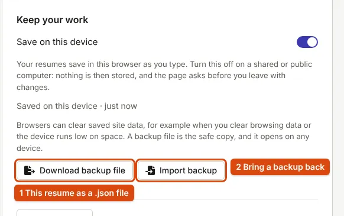
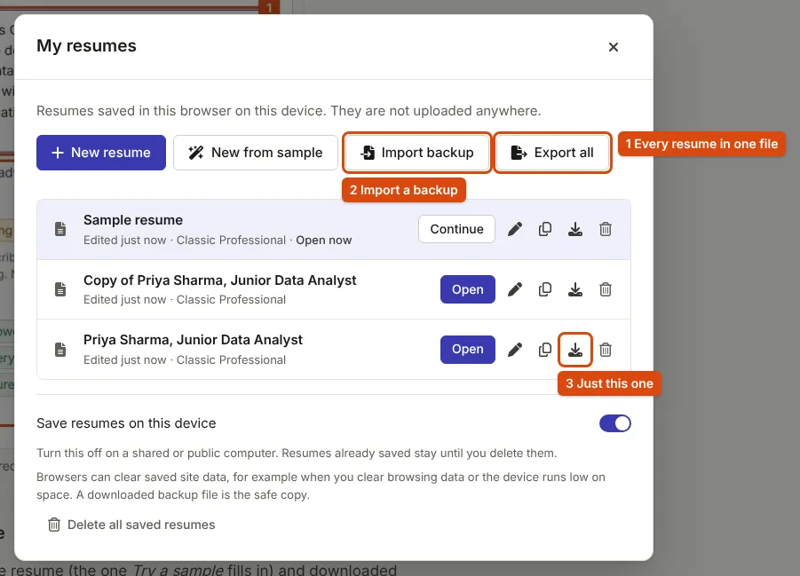
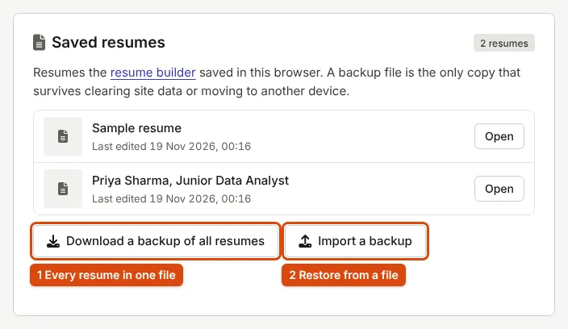

How to Back Up and Restore Your Resumes
Your resumes live in this browser only. A backup file is the copy you control: download it, keep it somewhere safe, and import it on any device.
Why a backup file matters
The resume builder saves your resumes in this browser on this device, and nowhere else. There is no account and no copy on a server, so there is nothing to sign in to on another device and nothing anyone can restore for you. If the browser's data is cleared, the saved resumes are gone. A backup file is a small .json file with the full content of your resumes. It opens in ApplyReady on any device, and it is the only copy that survives clearing the browser. This tutorial shows each click; editing a saved resume covers the rest of My resumes.
Before you start
- The browser your resumes are saved in. Backups are made from what that browser holds.
- A place to keep the file that you control: your own email, a cloud drive, a USB stick, or a chat with yourself. The file contains everything in your resume, including your phone number and email, so treat it like the resume itself.
- To restore: the backup file on the device you want to use, and a browser where saving is switched on.
Step 1: Back up the resume you are working on
In the builder, select the Download tab (or Review and download, then Next: Download). Under Keep your work, select Download backup file.

What you see: a file downloads, named after the resume, for example Priya_Sharma_Junior_Data_Analyst_resume_backup.json, and a message says Backup of "Priya Sharma, Junior Data Analyst" downloaded. Keep the file somewhere safe; import it to restore the resume.
Step 2: Back up all your resumes at once
Select My resumes, then Export all. One file with every saved resume downloads, named with the date, for example ApplyReady_resumes_backup_2026-11-18.json, and the message says how many resumes it holds. To back up a single resume from the list instead, use the download button on its row, Export.

The Your data page offers the same backup with Download a backup of all resumes, next to Import a backup.

Step 3: Keep the file somewhere safe
Move the file out of the Downloads folder to a place you will still have in a month: email it to yourself, save it to your cloud drive, or copy it to a USB stick. Make a new backup after every important change; the file is a snapshot of the moment you made it, and later edits are not in it. On a shared computer, delete the file from the Downloads folder once you have sent it to yourself, as protecting your privacy on a shared computer explains.
Step 4: Restore from a backup
Open the resume builder in the browser you want to use. Select Import backup, either under Keep your work in the Download step or at the top of My resumes, and choose the .json file.
What you see: the message Imported 1 resume and opened followed by its name (or the number of resumes, for a file made with Export all). The most recently edited resume from the file opens, and the status reads Saved on this device.
Importing never replaces anything. Each resume in the file becomes a new entry in My resumes, with the edit dates it had in the file. A resume that is already saved in the browser exactly as it is in the file is skipped, so importing the same file twice does not give you two copies. When a resume with the same name is already there, for example a version you have edited since the backup, the imported one is marked restored with the date, such as Priya Sharma, Junior Data Analyst (restored 18 Nov), and both stay. Delete the one you do not need.
Step 5: Move your resumes to another phone or computer
- On the old device, select My resumes, then Export all.
- Send the file to the new device in a way you trust: email to yourself, a cloud drive, a USB cable or stick.
- On the new device, open the builder and select Import backup with that file.
- Open My resumes on the new device and check that every resume is listed.
Nothing syncs afterwards. Edits made on one device stay on that device until you export and import again.
The limits of browser storage, honestly
- Clearing data deletes resumes. Clearing browsing data, cookies and site data, or this site's storage removes them, and so can cleaning apps.
- Private windows forget. In a private or incognito window, everything is deleted when the window closes. When a browser refuses to store anything, the builder says Not saved: this browser is not keeping data for this site; many private windows do accept data and only delete it on closing, so the builder cannot always tell. In a private window, assume nothing is kept.
- Browsers can evict data. When a device runs low on space, a browser may delete data from sites you have not used recently. On Your data, Storage on this device shows how much ApplyReady uses and whether its storage is protected from automatic clearing; Keep my data asks the browser to protect it. The browser decides whether to agree.
- Each browser is separate. Resumes saved in one browser are not visible in another, even on the same device.
What you get
- A .json backup of one resume or all of them, which you can keep anywhere and import on any device.
- After an import, each resume from the file as its own entry in My resumes, ready to open and edit.
If something goes wrong
"This file is not an ApplyReady resume backup, or it is damaged."
The file is not one the builder saved, or it was changed. Your saved resumes are unchanged. Choose the .json file that ApplyReady downloaded; a PDF or Word resume cannot be imported.
"This file is larger than 5 MB"
No resume backup is that large, so the file is something else. Choose the backup file instead.
The resume opened but the message says saving is off
With Save on this device switched off, an import opens the resume but stores nothing. Switch saving on and import again if you want it kept. The Your data page refuses an import while saving is off, for the same reason.
Some resumes in the file were skipped
The message says how many could not be read. One import takes at most 200 resumes; split a larger collection across several files.
Sources
- MDN Web Docs: Storage quotas and eviction criteria, how much browsers store and when they delete it
- MDN Web Docs: StorageManager.persist(), what Keep my data asks the browser for
- Google Chrome Help: Delete browsing data in Chrome, which choices remove site data
Every step on this page was followed in the current resume builder and Your data page, and the screenshots come from them. Found a mistake? Report an error.